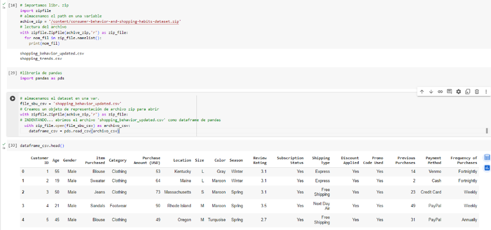
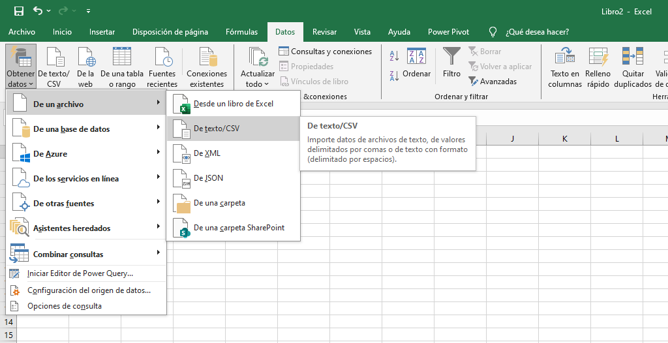
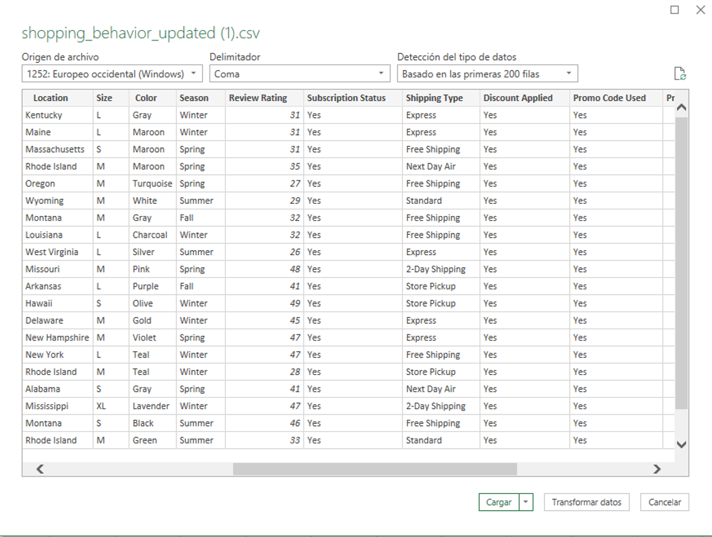

1. Extracción de datos
Para este procedimiento, tenemos 2 formas. La primera forma es mediante el uso
del lenguaje Python, haciendo uso de las librerías [pandas, Seaborn] en el
entorno de Visual Studio Code, de la siguiente manera:
1.1. Uso de Python bajo el entorno de Jupyter
Usamos las credenciales del token para descarga de data.
{"username":"######","key":"####################"}
En un entorno de Google Colab para ejecución de código Python:
Con los codelines de [2] y [3] garantizamos que no haya un archivo igual
‘.kaggle’ en la carpeta raíz.
Con el codeline[14], podemos validar todos los dataset creados por el autor
‘zeesolver’. Procedemos a descargar el dataset de primera opción
consumer-behavior-and-shopping-habits-dataset.csv.
Podemos apreciar su tamaño y tipo de licenicia. Con los siguientes codelines
procedemos a validar los primeros registros de la tabla “.head()”,
así como su estructura, tipo de datos, posibles valores nulos, limpieza y
transformación inmediata de ser necesario, entre otras funcionalidades.

1.2. Uso de Excel y power query
La segunda forma es más sencilla, pero presenta mayor limitación en cuanto
a funcionalidades, es decir, no nos va permitir hacer una limpieza y
transformación ágil en caso de haber valores nulos y errores ortográficos.
Sin embargo, presenta la ventaja de ser más intuitivo y amigable.

Se procede a extraer el archivo en formato csv, la herramienta reconoce el
signo delimitador entre campos y los divide por columnas.
En este caso la transformación y limpieza se puede realizar de forma manual
dadas las herramientas dispuestas en la barra superior.

Posterior a estas correcciones, se carga nuevamente en el Excel para su
modelamiento o normalización. Esto con la finalidad de que la data sea
coherente, integra, se evite redundancias o datos duplicados.
Power Query es una herramienta que nos va facilitar conexión con diversas
fuentes de datos, tales como la nube, sea sharepoint, blob storage,
Data lakes. Por otro lado, orígenes de base de datos relacionales, tales
como Oracle, SQL Server, MySQL. Archivos xml, json, csv, etc.
2. Etapa de modelamiento de datos
Para este proyecto, relacionado con las preferencias de producto y hábitos
de consumidores, es necesario modelar el dataset, ya que le añade mayor
capacidad de análisis, hace la tabla fact o tabla de hechos más ligera y
por tanto más ágil y eficiente en las respuestas ante consultas.
Cumpliendo con los criterios de normalización:
1. Primera forma normal (1FN): Atributos atómicos (Sin campos repetidos)
2. Segunda forma normal (2FN): Cumple 1FN y cada registro de la tabla debe
depender de un campo con clave única [Primary key].
3. Tercera forma normal (3FN): Cumple 1FN y 2FN y los campos que NO son clave,
NO deben tener dependencias. Cuarta forma normal (4FN): Cumple 1FN, 2FN, 3FN
y los campos multivaluados se identifican por una clave única.
Se tiene como resultado un esquema de tipo estrella, se establecen las relaciones
con apoyo de la herramienta power pivot.